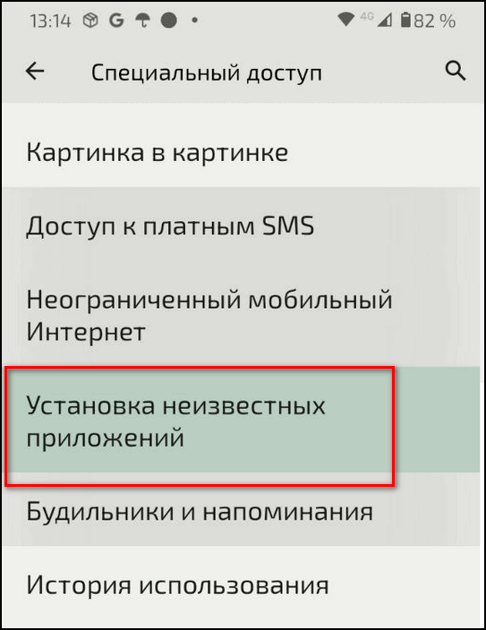
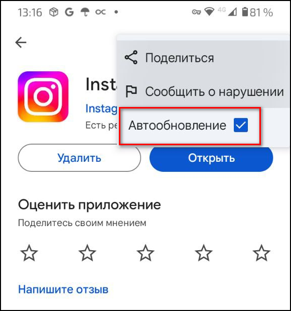
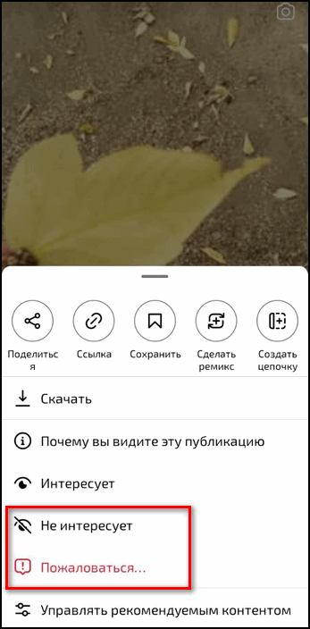

Как отключить Рилс в профиле Инстаграм на телефоне

Отключить Reels в Инстаграме* обычными настройками не получится, потому что это функция, включенная в само приложение. Пользователи, которые больше не желают смотреть короткие видео, могут воспользоваться одним из ниже указанных вариантов.
Убрать кнопку Рилс из приложения Инстаграм*
В 2022 году функция Reels стала обязательной частью приложения. И если IGTV можно было получить с помощью дополнительной утилиты из Play Market или AppStore. Есть всего один вариант, как убрать раздел Рилс: отказаться от обновлений и установить устаревшую версию. Переустановка приложения, чтобы отключить Рилс в Инстаграме*, доступна владельцам смартфонов под управлением Android. Пользователю нужно следовать инструкции:
- Удалить установленную новую версию Instagram*.
- Скачать файл APK — подтвердить установку.

- Если появится уведомление о разрешении установки из неизвестных источников — дать доступ через настройки.

- Подождать, пока приложение установится.
После успешной процедуры пользователь сможет открыть старую версию и войти в аккаунт, указав свои учетные данные.
Установить предыдущую версию
У такого способа есть несколько недостатков:
- проблемы с подключением к интернету. Медиафайлы подвисают, видео не загружается;
- переписки недоступны из-за отсутствия соединения;
- возможны ошибки уже при авторизации.
Таблица предыдущих версий:
| Дата выпуска: | Номер: |
| 7.12.2020 | 168.0.0.40.355 |
| 11.10.2020 | 163.0.0.39.122 |
| 18.09.2019 | 111.0.0.24.152 |
| 15.06.2019 | 98.0.0.8.119 |
*Для iOS подобная функция не предусмотрена. С помощью таблицы можно найти более устаревшую версию и скачать. Например, если приложение с 2020 года работает хуже, чем с 2019. Нужно скопировать название версии и воспользовавшись поисковиком, найти файл APK. Кроме этого, в настройках Play Market нужно отключить автоматическое обновление:
- Зайти в магазин приложений — вписать в поиске Instagram*.

- Перейти к странице утилиты — нажать сверху три точки «Автообновление».
Теперь установленная старая версия не будет конфликтовать с версией Android, а Плэй Маркет перестанет искать обновления и блокировать текущую.
Удалить все видео Reels в профиле Инстаграма*
Отключить Reels можно в своем профиле, удалив все ранее размещенные видео. Социальная сеть не перестанет рекомендовать клипы других пользователей, но такого контента станет меньше.
Если убрать в Архив или скрыть от посетителей — это не повлияет на показ видео. Стирать нужно клипы по-одному: перейти к клипу – нажать снизу три точки и выбрать в параметрах «Удалить».
С компьютерной версии, чтобы убрать все клипы:
- Зайти в свой профиль – нажать по недавно размещенному клипу.
- Снизу три точки – выбрать «Удалить».
С мобильной версии пользователь сможет восстановить запись в течение 30 дней. Через компьютер такой функции нет, поэтому перед удалением важных медиафайлов их нужно скачать на телефон.
Настроить рекомендации для видео Рилс
Рекомендации не убирают Рилс из Ленты, но делают контент более интересным для пользователя. Владелец страницы может управлять темами видео, которые будут ему порекомендованы, а также исключать те, в которых он не заинтересован. Есть два варианта, как отключить Рилс в Инстаграме* на Айфоне с неактуальными темами:
- раздел в «Настройках» - «Что видите вы»;

- отмечать каждое видео: «Интересное» или «Не заинтересован».
В первом случае, владельцу нужно перейти к настройкам своего профиля и выбрать пункт: «Что видите вы». Далее появятся подкатегории: по интересам и без них. Можно указать, какие публикации нужно исключить из перечня рекомендованных. При следующем просмотре Рилс, нужно перейти к дополнительному меню, чтобы отметить: интересна ли пользователю тема или нет. Постепенно видео будут соответствовать запросам: при регулярной фильтрации.